|
|
HELP FIND THE FOLLOWING LOCATIONS
PAGE 16
THE HUMAN
JUNGLE: Fine
Feathers (Vernon Sewell: 1963)
Cresswell Place, London, SW10
Penny (Jane Merrow) and David Branch (Philp Gilbert) live in a London Mews flat.
(Identified by Sietse Postma, February 2024)


THE HUMAN
JUNGLE: Struggle
for a Mind (Sidney Hayers:
Feb/Mar 1964)
Unknown 1
– Underground Station -
An underground train passes through the station.

Unknown 2 – Liz Kross (Joan Collins) descends into the underground station on an escalator. She collapses at the bottom of the flight, and a helpful stranger (Mark Burns) comes to her assistance. Liz's bag has become caught in the escalator and as the stranger struggles to free it Liz wanders off towards the platform.
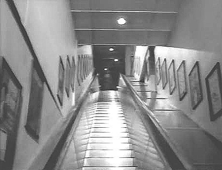
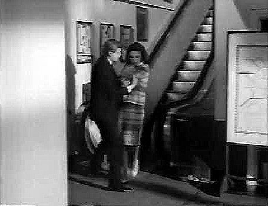
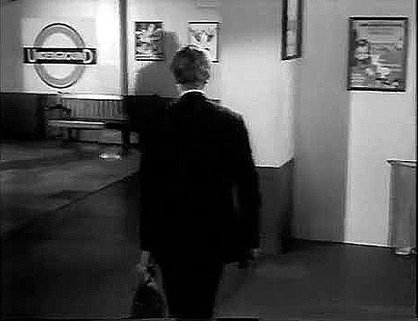
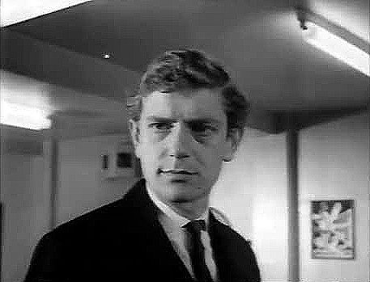
Unknown 3/4 – Suburban Street – On their way to visit the Kross family, Corder and Liz travel in his Humber Super Snipe.


THE
HUMAN
JUNGLE: The
Quick and the Dead (Roy Baker,
???)
Unknown 1 – Jimbo
Harris'
childhood home where he plays with his home-made bow and arrows in the
garden
until his father (Moray Watson) interferes.
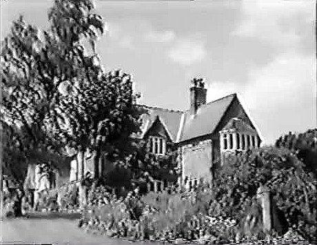
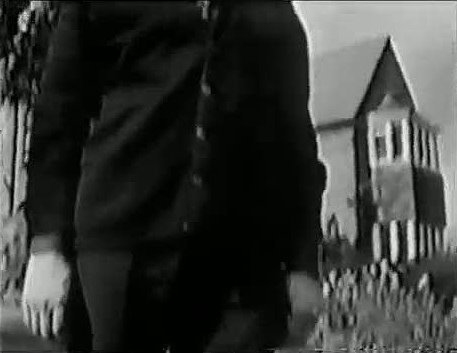
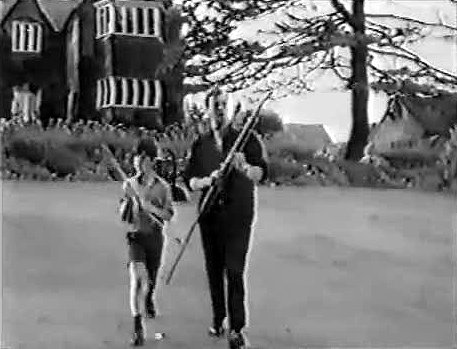
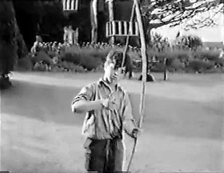
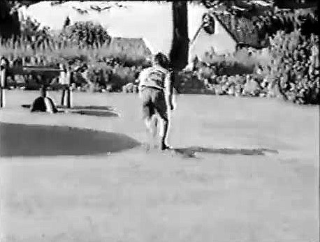
THE
HUMAN
JUNGLE: Dual
Control (Roy Baker, ???)
Q40: Woodside, Alum Lane, Borehamwood (redeveloped) – Jane Harris (Mary Steele) arrives at Rest Harrow School for
Handicapped Children in her Hillman Imp to interview the Matron (Peggy
Marshall) on behalf of Dr Corder.
Later Jane Harris takes Jane Falcon (Annette Andre) back to work at
Rest
Harrow, but things to not work out well.
(Identified by Geoff Dodd, July 2023)
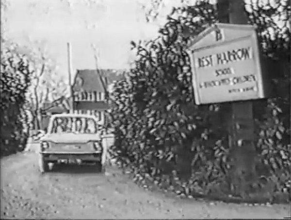
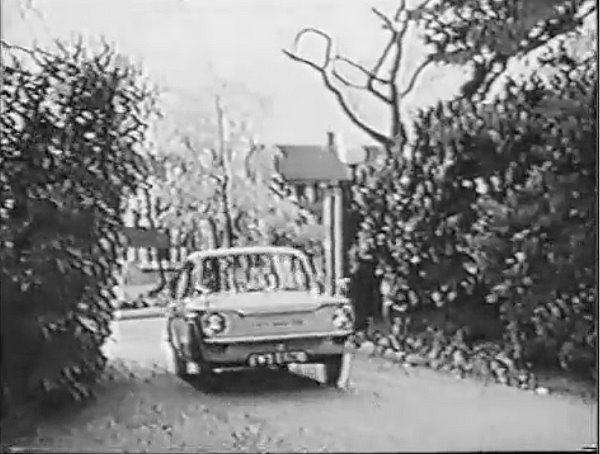
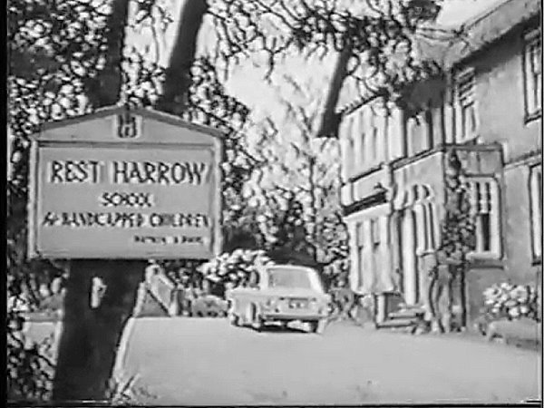
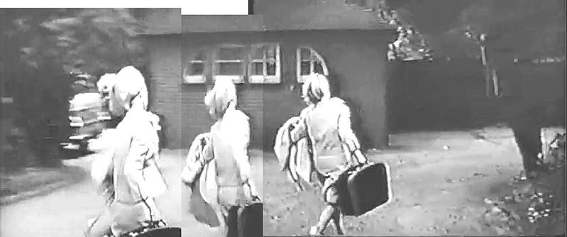
N55: The Wagon and Horses, Watling Street, Elstree –
Road to
at Rest Harrow School for Handicapped Children - Jane Harris drives
Jane Falcon
back to work at Rest Harrow in her Hillman Imp (Watling Street, just before The Wagon and Horses).
(Identified by Geoff Dodd, July 2023)
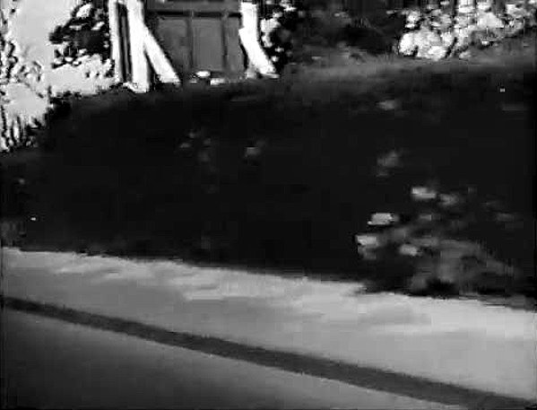
THE HUMAN JUNGLE: The 24-Hour Man (Robert Day, ???)
E15: High Wycombe College of Art and Technology,Queen Alexandra Rd and Abbey Way in High Wycombe – Saint Damian's Hospital - After being mugged, Dr Corder, R.M.D., D.P.M, is taken to his own hospital to recover.
THE HUMAN JUNGLE: Run with the Devil (???)
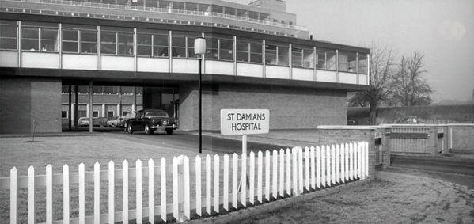
Tavistock
Crescent, W11(redeveloped)
- Dr.
Jimmy Davis (Michael Johnson) goes to interview Alvar
Bell at Dr Corder's
request.
(Identified by Alan Field, March 2011)
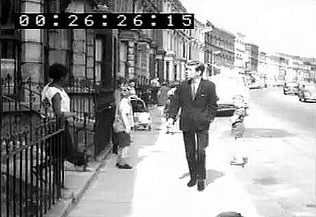
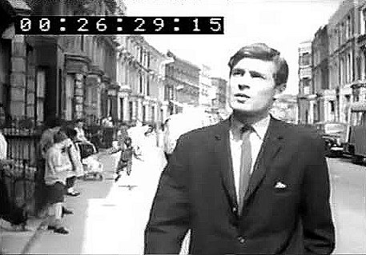
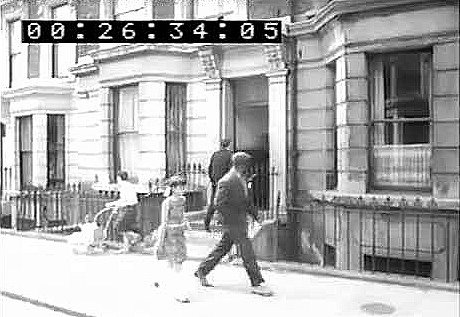
Unknown 3 – Alvar Bell (Johnny Sekka) goes to a local betting office to see Johnny, the ironmonger, to obtain a gun.
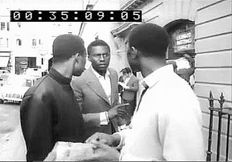
THE HUMAN
JUNGLE: Conscience
on a Rack (Roy Baker: Feb 1964)
South
Hampstead Railway Station –
Finding herself facing a tunnel on a railway line, Dorothy Wyley
(Flora Robson) hears the whistle
on an oncoming train and turning around she begins to run, but falls
onto the
tracks. The approaching locomotive exits the tunnel and runs over
Wyley,
who suddenly
wakes up from her nightmare.
(Identified by Alan Field, March 2011)
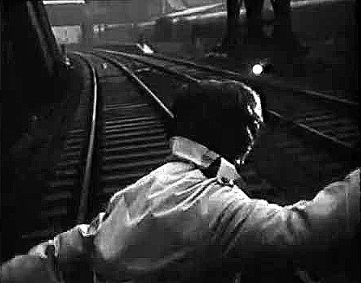
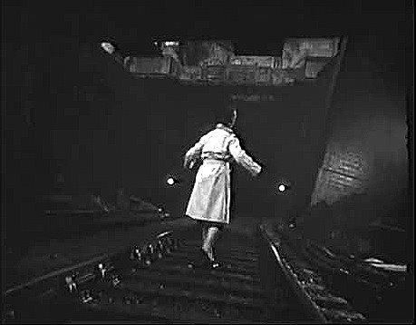
Unknown 2 –The approaching locomotive.
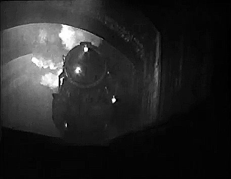
 Probably
stock footage.
Probably
stock footage.
Unknown 3 – After her appointment with Dr Corder, Dorothy Wyley returns to the school on a steam train, which travels along an embankment.
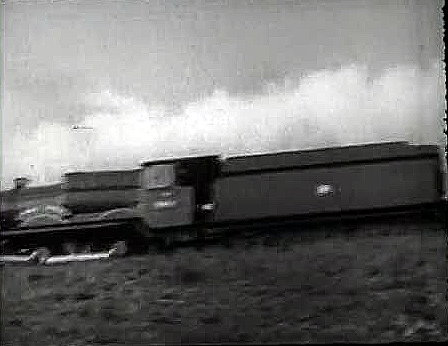
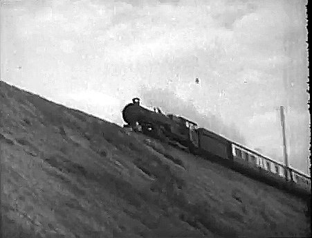
 Probably
stock footage.
Probably
stock footage.
THE
HUMAN JUNGLE: Wild
Goose Chase
(Vernon Sewell, ???)
Deacons Hill Road
–
Dr. and Mrs
Dunn arrive home, 14 Church Road. They call the police after
discovering a
break in Soon a police car and an ambulance arrive.
(Identified by Geoff Dodd)
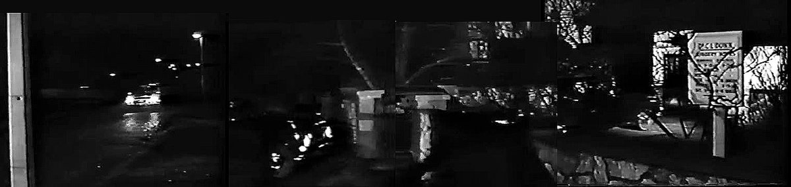
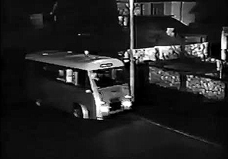
The
Rise, Borehamwood – Mrs. Oliver
(Aimee Delamian)
finds a strange man in her
garden. The man William Jones (Vladek Sheybal)
offers to do some gardening and odd jobs. Mrs.
Oliver calls the police and Police, inspector Detective.
Constable.
Cowan (John Bonney)
and a Police constable (Derek
Newark) soon arrive in their police car to
question the man.
(Identified by Geoff Dodd)
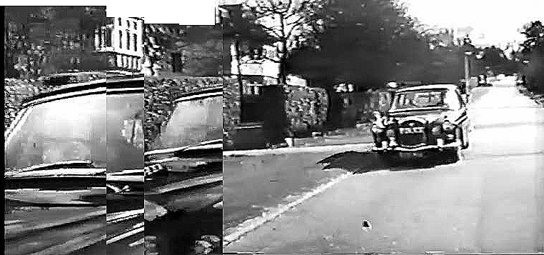
A41
Finchley Road, Hampstead –
Back
projection as Jenifer drives Mary Thomas back home from the identity
parade in
her car.
(Identified by Alan Field, June 2023)


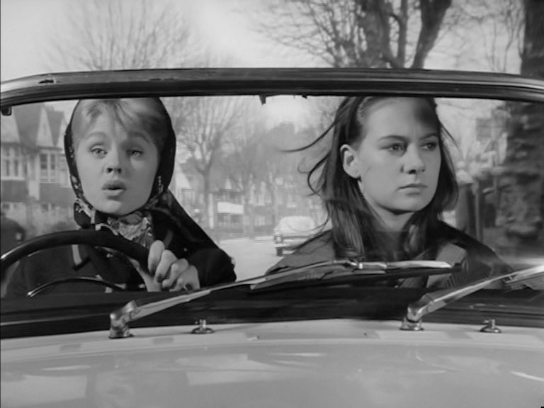
Deacons
Hill Road
–
Jenifer Corder
(Sally Smith)
drives Mary Thomas (Francesca Annis)
back home
from the identity parade in her car. When they get there Sally invites
Mary to
a 'Goose Chase'.
(Geoff Dodd)
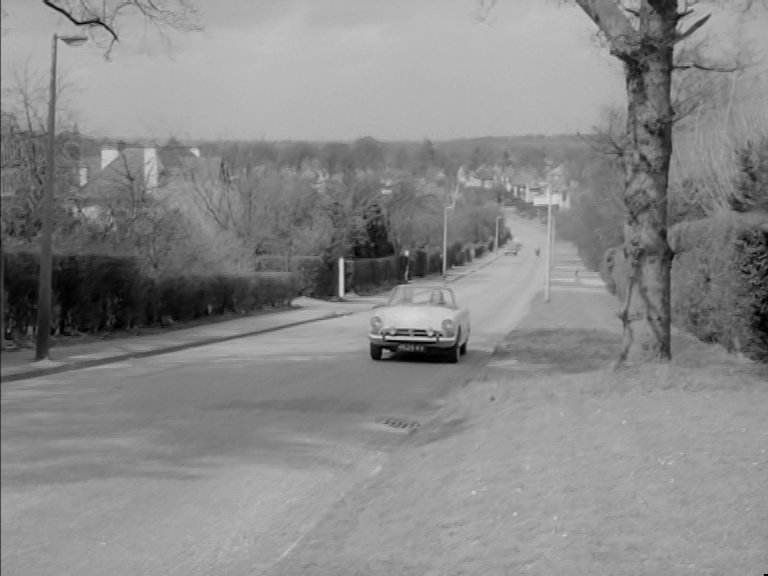
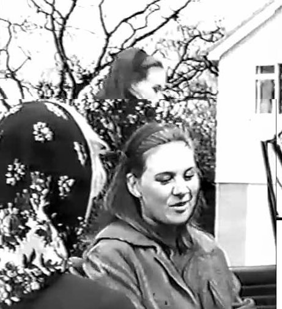
Finchley Road – Sally invites Mary Thomas to join her and her four friends on a motorised treasure hunt which they call a 'Wild Goose Chase'.

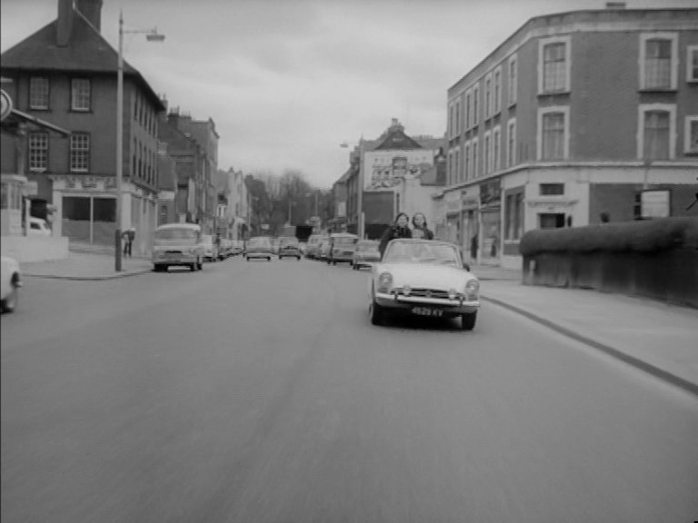
Chelsea
Embankment
– Sally invites Mary Thomas to join her and her four friends on a
motorised
treasure
hunt which they call a 'Goose Chase'. The next clue they read is a
section of
the Gettysburg Address.
(Identified by Geoff Dodd)
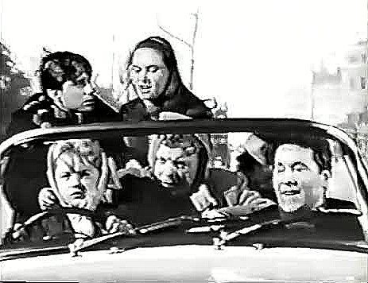
Finchley Road – Sally Corder's car full of goose chasing friends heads up the Finchley Road (filmed between Ridge Road and Prospect Road to the right) to the derelict house previously used for their Guy Fawkes party.
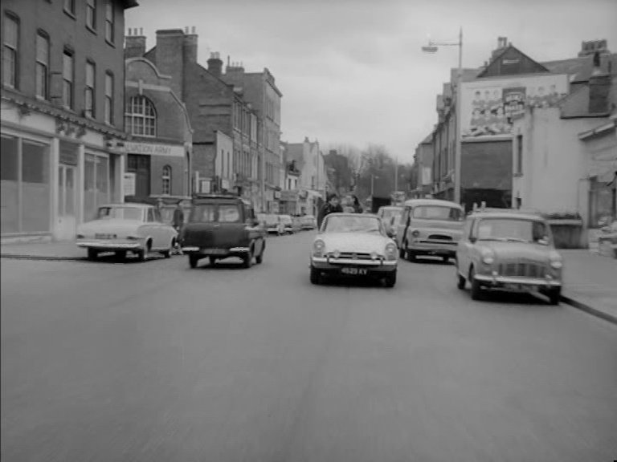
Finchley
Road opposite junctions with
Wycombe Gardens and Hodford Road – Sally Corder's
car full of
goose chasing frinds
heads up the Finchley
Road to the derelict house previously used for their Guy Fawkes party.
(Identified by Geoff Dodd, August 2020)
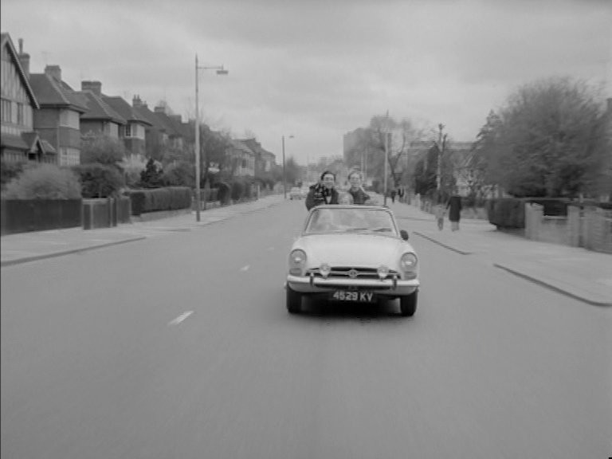
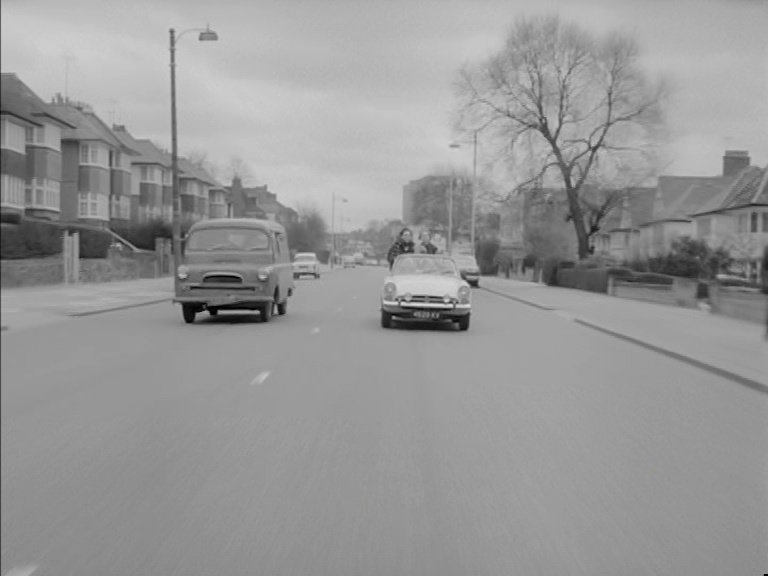
Deacons
Hill House, Barnet Raod,
Deacons Hill, Elstree (demolished) – Sally Corder's
(Sally Smith)
car full of goose chasing students
arrives at derelict house previously used for their Guy Fawkes party.
The party
includes Mary Thomas (Francesca Annis),
a student (James Kerry), Tom (Michael Byrne) and
two others. All but Mary set off to search the house for a clue to the
location
of that night's party. Later Mary runs to hide in the house and Dr.
Corder
(Herbert Lom)
and Jenifer drive there to look for her.
Identified by Philip
Judge, February 2020
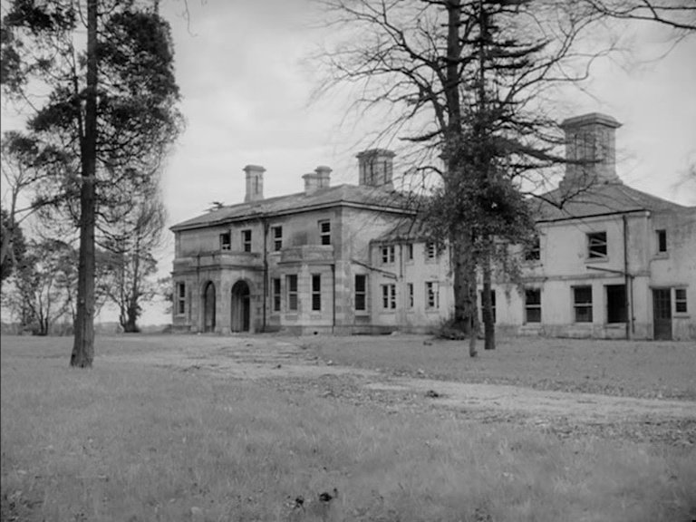
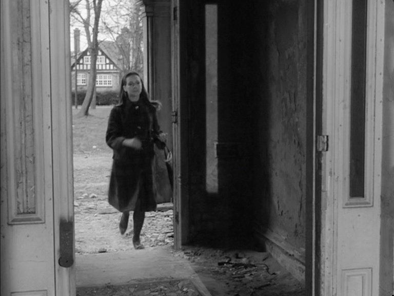
THE
HUMAN JUNGLE: Skeleton
in the Cupboard
(Roy Baker. ???)
Unknown 1 –
Dr. Corder
drives along
a country lane on his way to see Lady Harriet Brindley
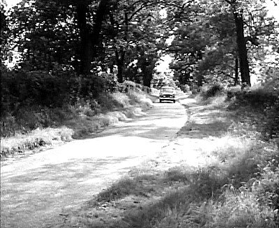
 Previous
shots round Shenley and Letchmore
Heath.
Previous
shots round Shenley and Letchmore
Heath.
Q21:
Barham Avenue,
Borehamwood – The home of Dr Fisher (Allan
Cuthbertson)
where Dr. Corder
(Herbert Lom)
goes to talk about the Brindley
family.
(Identfied by Geoff Dodd)
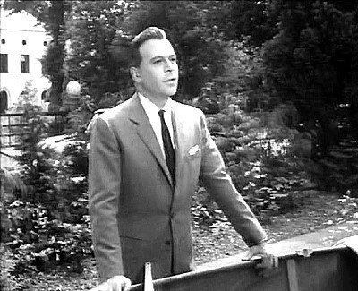
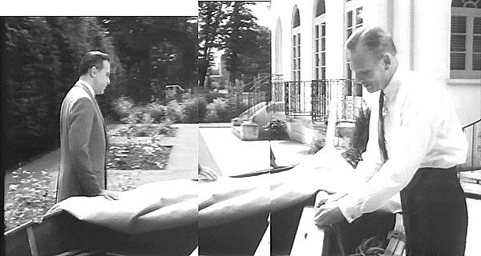
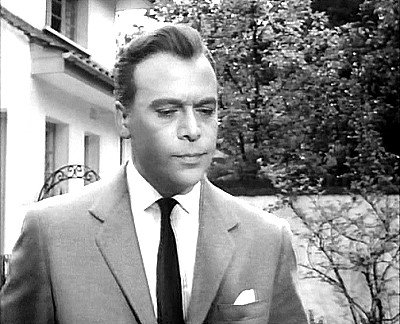
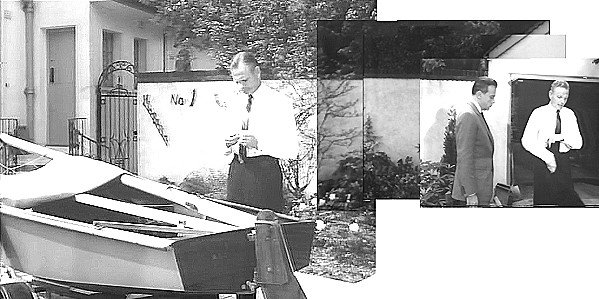
THE
HUMAN JUNGLE: Heartbeats
in a Tin Box (Roy Baker
???)
Kingsbury High
School (Lower School) – Pupils and
teachers arrive
at Headly
Secondary School (Looking towards Roe Green and Bacon Lane).
(Identified by Alan Field, June 2023)
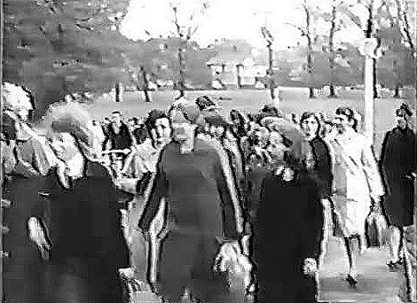
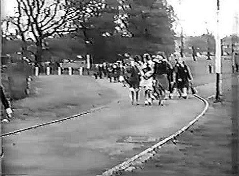
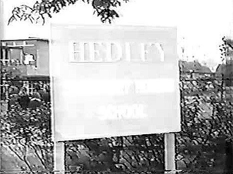
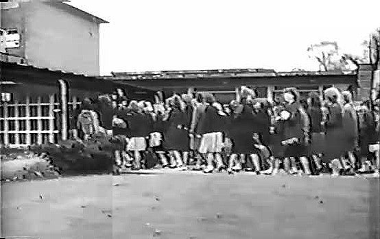
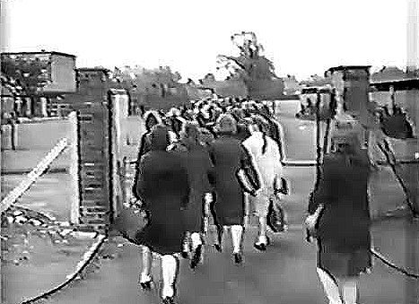
Unknown 1 – Dr. Jimmy Davis (Michael Johnson) goes to visit Christine Box's mother. Later Christine Box returns home after teaching a science evening class.
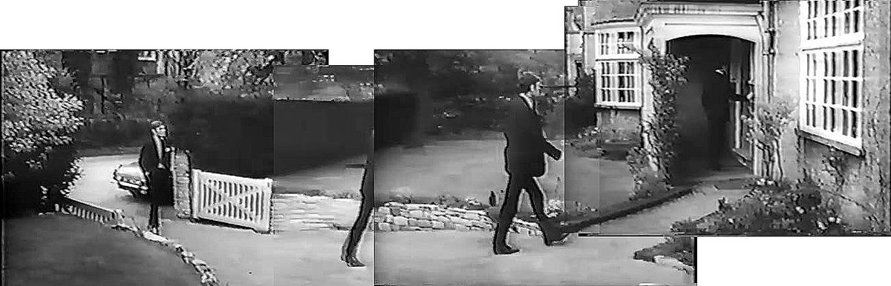
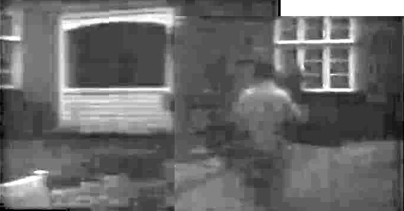
Unknown 2 – Dr Corder goes to visit Christine Box at the school where she teaches science evening classes. After the interview Christine Box (Judith Scott) walks home alone.
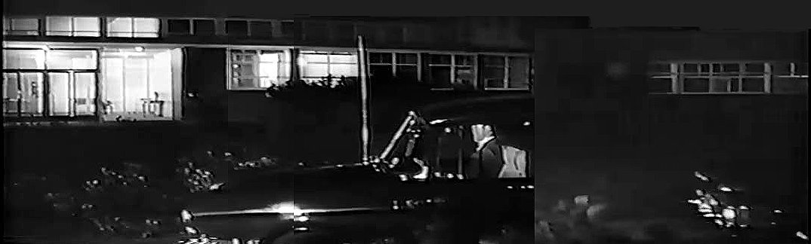
THE HUMAN
JUNGLE: The Man Who
Fell Apart (Roy Baker
???)
Unknown 1 – Having
run over one of Joy South’s (Rita Tushingham)
dogs in his E-Type Jaguar, Patrick Grant (Alan
Dobie) gets out of his car and walks back to where she is knelt by the
dead
animal in the road.
Unknown 2 – Having climbed to the top of a quarry, Joy (Rita Tushingham) threatens to kill herself by jumping over the edge. In order to save her life, Patrick (Alan Dobie) promises to marry her, but Joy loses her footing and falls down into the quarry.
Think you know a spot? Need a bigger image? Email me.
< Previous | Index | Avengerland | Next >
Copyright © 2023 Anthony R. McKay